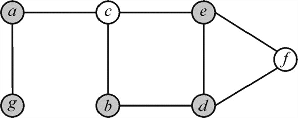

Decision Version of the Set-Covering Problem
In the set covering problem a set of finite capacity is given which is also called the universe U of n elements. Each element of universe U is contained in either of the subsetsof set S.
For example: Consider that there are 10 simple points are in the universe U and each of the point is contained in subsetsas shown in the figure below:
The subsets are contained in the set S that isthe minimum set that covers all the points of the universe is. In set covering problem there is a finite set (universe) U of n elements is given, with a collection of its subsets, each set has a non-negative cost cost(S). The task is to find a minimum cost collection of these subsets is U.
Vertex-Cover Problem: For an undirected graph the vertex
cover is define as the set of vertices that can cover all the edges
of the graph. Consider the graph  the subset
P of vertex set V is the set of vertices that can
cover all the edgesin the graph
that is either the edgeis connected
to vertex a or it is connected to the vertex b.
the subset
P of vertex set V is the set of vertices that can
cover all the edgesin the graph
that is either the edgeis connected
to vertex a or it is connected to the vertex b.
For example: Consider the graph where .
.

In the above graph the un-colored vertices are covering the
edges of graph G that is vertex cover . The size
of vertex cover is the total amount of vertices in the vertex cover
set. For the above graph the size of vertex cover is 4.
. The size
of vertex cover is the total amount of vertices in the vertex cover
set. For the above graph the size of vertex cover is 4.
Proof for decision problem of set cover is NP complete:
For showing that decision problem of set cover is NP complete following two points must be proved:
a. The problem is in NP by a polynomial time expression.
b. Reduce it to any of the NP complete problem using the above one.
a. Proof for decision problem of set cover in NP: Consider an example of set covering problem. The set covering problems here includes two sets. The finite set can be considered as S that is the total set of sports and the other set taken is of efficient set of counselors, which is defined according to the set covering problem which is in NP.
Assume that S is the total set of k sports and A is the efficient set of counselors to be verified. Then the algorithm for the recruitment of counselors for the sports is as which is:
Certifier_efficient_recruitment()
{
// check if number of counselors are greater than number of sports sets
if
// break the process by retuning false
return false
end
else
// c is the number of times loop runs to find the set of counselors
for each counselor
// exclude all counselors who are expert in sports and included in set S
remove all sports that A is expert in from S
// end of for loop
end for
// check if the set is empty
if set S is empty
// returning true on successful execution of algorithm
return True
else
// return statement
return False
}
In the above algorithm the outer loop runs for maximum of c number of times and there are k sports subsets are included in the set S so, the inner operation will be performed in k time. Hence, the overall complexity of algorithm.
The complexity of the algorithm is in the form of polynomial and taken up by both the sets totally in the set covering problem above. Therefore, above efficient recruitment problem of counselors is in NP.
b. Reduce the decision problem of set discover to any of the NP complete problem
As the vertex cover problem is NP complete so reducing the set cover problem to vertex cover problem as:
Consider that there is a vertex- cover problem for a graph G(V, E), allocate a counselor at each vertex and allocate a sport on every edge. So, that is V is the number of vertices in vertex cover problem and A is the number of counselors in set cover problem.
That is E is the number of edges in vertex cover problem and S is the set of sports in set cover problem.
The two vertices joining the edges are the experts in that sport. Further, for finding the least number of counselors who are the expert in each and every sport, there will be the lowest number of vertices that cover all edges. So, the vertex cover of size k in the vertex cover problem will be similar to the set cover of size k in the set cover problem. Thus the above problem is reduced to vertex cover which is NP complete so this problem will be in NP complete.
Hence, the decision version of the set covering is in NP by a polynomial time expression and it is been reduced it to vertex cover problem which is NP complete so it is in NP complete.
An instance (X, F) of the problem has a finite set of elements X and a family of subsets (F) such that the
Let 
We must find a minimum size subset such that
The implementation can be done as follows:
LINEAR-GREEDY-SET-COVER
1 Find the sizes of every instance of S storing them in S. size
2 Let the length of the array A be which has empty lists
3 for each instance of S do
4 Add S to A [S. size]
5 end for
6 Let A.max be the index of the largest non-empty list in A
7 Let L be an array of length  consisting
of empty lists
consisting
of empty lists
8 for each S do
9 for do
10 add S to
11 end for
12 end for
13 Select a set cover C which is initially empty
14 Let M be the set of letters that are empty
15 while A.max>0 do
16 Let be any element of
17 add to C
18 remove from
19 for do
20 for do
21 Remove S from
22 S. size-= 1 //decrement size
23 Add S to A [S. size]
24 if A[A.max] is empty, then
25 A.max-=1
26 end for
27 end for
28 end while
Explaination: Take the maximum points to the set with
maximum number of elements. Add this set to get the required
results. Decrement elements to be added in  time. Check
if elements to be added are greater the 0 or not, else take the
next maximum set.
time. Check
if elements to be added are greater the 0 or not, else take the
next maximum set.